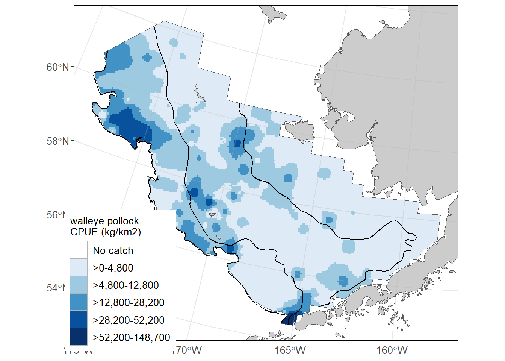

# link to the API
api_link_haul <- 'https://apps-st.fisheries.noaa.gov/ods/foss/afsc_groundfish_survey_haul/'Access via API and R
An application programming interface (API) is a way for two or more computer programs to communicate with each other. More information about how to amend API links can be found here. Useful introductions to using APIs in R can be found here.
There are three tables the user can pull from the API. Learn more about them on the FOSS data description page. Here, you can see them in their raw JSON format:
- haul: https://apps-st.fisheries.noaa.gov/ods/foss/afsc_groundfish_survey_haul/
- catch: https://apps-st.fisheries.noaa.gov/ods/foss/afsc_groundfish_survey_catch/
- species: https://apps-st.fisheries.noaa.gov/ods/foss/afsc_groundfish_survey_species/
Here are some examples of how to use the data with R:
12.1 Ex. Load all rows of the catch, haul, and species data tables
Note that without specifying, a basic query to the API will only return 25 entries.
12.1.1 Load haul data
12.1.1.1 Load first 25 rows of data
res <- httr::GET(url = api_link_haul)
# res ## Test connection
## convert from JSON format
dat <- jsonlite::fromJSON(base::rawToChar(res$content))$items
# Find how many rows and columns are in the data pull
print(paste0("rows: ", nrow(dat), "; cols: ", ncol(dat)))[1] "rows: 25; cols: 28"12.1.1.2 Load all data:
Since the maxim number of rows a user can pull is 10,000 rows in a query, the user needs to cycle through by offsetting to the next 10,000 rows (as is shown here).
dat <- data.frame()
for (i in seq(0, 500000, 10000)){
## find how many iterations it takes to cycle through the data
print(i)
## query the API link
res <- httr::GET(url = paste0(api_link_haul, "?offset=",i,"&limit=10000"))
## convert from JSON format
data <- jsonlite::fromJSON(base::rawToChar(res$content))
## if there are no data, stop the loop
if (is.null(nrow(data$items))) {
break
}
## bind sub-pull to dat data.frame
dat <- dplyr::bind_rows(dat,
data$items |>
dplyr::select(-links)) # necessary for API accounting, but not part of the dataset)
}[1] 0
[1] 10000
[1] 20000
[1] 30000
[1] 40000Explore the data contents:
# Find how many rows and columns are in the data pull
print(paste0("rows: ", nrow(dat), "; cols: ", ncol(dat)))[1] "rows: 34839; cols: 27"# learn about the structure of the data
summary(dat) year srvy survey survey_name
Min. :1982 Length:34839 Length:34839 Length:34839
1st Qu.:1997 Class :character Class :character Class :character
Median :2006 Mode :character Mode :character Mode :character
Mean :2006
3rd Qu.:2015
Max. :2025
survey_definition_id cruise cruisejoin hauljoin
Min. : 47.00 Min. :198201 Min. : -777 Min. : -24955
1st Qu.: 47.00 1st Qu.:199701 1st Qu.: -700 1st Qu.: -14898
Median : 78.00 Median :200601 Median : -618 Median : -4846
Mean : 74.77 Mean :200595 Mean : 286597 Mean : 281205
3rd Qu.: 98.00 3rd Qu.:201501 3rd Qu.: 827462 3rd Qu.: 802366
Max. :143.00 Max. :202502 Max. :1225395 Max. :1225635
haul stratum station vessel_id
Min. : 1.0 Min. : 10.0 Length:34839 Min. : 1
1st Qu.: 56.0 1st Qu.: 31.0 Class :character 1st Qu.: 88
Median :111.0 Median : 50.0 Mode :character Median : 94
Mean :116.6 Mean :129.4 Mean :109
3rd Qu.:169.0 3rd Qu.:141.0 3rd Qu.:147
Max. :355.0 Max. :794.0 Max. :178
vessel_name date_time latitude_dd_start longitude_dd_start
Length:34839 Length:34839 Min. :51.19 Min. :-180.0
Class :character Class :character 1st Qu.:55.02 1st Qu.:-170.7
Mode :character Mode :character Median :57.24 Median :-165.3
Mean :56.90 Mean :-140.1
3rd Qu.:58.98 3rd Qu.:-154.5
Max. :65.34 Max. : 180.0
latitude_dd_end longitude_dd_end bottom_temperature_c surface_temperature_c
Min. :51.19 Min. :-180.0 Min. :-2.100 Min. :-1.100
1st Qu.:55.02 1st Qu.:-170.7 1st Qu.: 2.700 1st Qu.: 5.800
Median :57.25 Median :-165.3 Median : 4.100 Median : 7.500
Mean :56.90 Mean :-140.1 Mean : 3.843 Mean : 7.809
3rd Qu.:58.99 3rd Qu.:-154.5 3rd Qu.: 5.200 3rd Qu.: 9.300
Max. :65.35 Max. : 180.0 Max. :15.300 Max. :18.100
NA's :4 NA's :4 NA's :1599 NA's :853
depth_m distance_fished_km duration_hr net_width_m
Min. : 9.0 Min. :0.135 Min. :0.0250 Min. : 7.51
1st Qu.: 68.0 1st Qu.:1.498 1st Qu.:0.2710 1st Qu.:15.58
Median : 101.0 Median :2.537 Median :0.4900 Median :16.40
Mean : 136.9 Mean :2.208 Mean :0.4009 Mean :16.43
3rd Qu.: 155.0 3rd Qu.:2.834 3rd Qu.:0.5100 3rd Qu.:17.22
Max. :1200.0 Max. :4.334 Max. :0.9800 Max. :23.82
net_height_m area_swept_km2 performance
Min. : 0.000 Min. :0.002314 Min. :0.0000
1st Qu.: 2.378 1st Qu.:0.024317 1st Qu.:0.0000
Median : 5.816 Median :0.039604 Median :0.0000
Mean : 4.794 Mean :0.036397 Mean :0.2782
3rd Qu.: 6.768 3rd Qu.:0.047225 3rd Qu.:0.0000
Max. :11.038 Max. :0.077795 Max. :7.0000
NA's :3270 # Print the first few lines of the data
dat |>
head(3) |>
flextable::flextable() |>
flextable::colformat_num(
j = c("year", "cruise", "cruisejoin"),
big.mark = "") |>
flextable::theme_zebra()year | srvy | survey | survey_name | survey_definition_id | cruise | cruisejoin | hauljoin | haul | stratum | station | vessel_id | vessel_name | date_time | latitude_dd_start | longitude_dd_start | latitude_dd_end | longitude_dd_end | bottom_temperature_c | surface_temperature_c | depth_m | distance_fished_km | duration_hr | net_width_m | net_height_m | area_swept_km2 | performance |
|---|---|---|---|---|---|---|---|---|---|---|---|---|---|---|---|---|---|---|---|---|---|---|---|---|---|---|
1989 | EBS | eastern Bering Sea | Eastern Bering Sea Crab/Groundfish Bottom Trawl Survey | 98 | 198901 | 159 | 11,795 | 153 | 61 | I-25 | 78 | OCEAN HOPE 3 | 1989-07-15T09:00:00Z | 57.65283 | -172.7848 | 57.67733 | -172.7922 | 3.4 | 7.8 | 121 | 2.759 | 0.50 | 17.47 | 0.048200 | 0 | |
1989 | EBS | eastern Bering Sea | Eastern Bering Sea Crab/Groundfish Bottom Trawl Survey | 98 | 198901 | 159 | 11,796 | 154 | 61 | J-25 | 78 | OCEAN HOPE 3 | 1989-07-15T12:00:00Z | 57.98600 | -172.8603 | 58.01000 | -172.8702 | 3.1 | 8.0 | 110 | 2.741 | 0.50 | 17.47 | 0.047885 | 0 | |
1989 | EBS | eastern Bering Sea | Eastern Bering Sea Crab/Groundfish Bottom Trawl Survey | 98 | 198901 | 159 | 11,797 | 155 | 61 | K-25 | 78 | OCEAN HOPE 3 | 1989-07-15T14:00:00Z | 58.32133 | -172.9123 | 58.33733 | -172.9138 | 3.1 | 8.4 | 110 | 1.796 | 0.33 | 17.47 | 0.031376 | 0 |
# save outputs for later comparison
dat_haul_api <- dat12.1.2 Load catch data
# link to the API
api_link_catch <- 'https://apps-st.fisheries.noaa.gov/ods/foss/afsc_groundfish_survey_catch/'12.1.2.1 Load first 25 rows of data
res <- httr::GET(url = api_link_catch)
# res ## Test connection
## convert from JSON format
dat <- jsonlite::fromJSON(base::rawToChar(res$content))$items
# Find how many rows and columns are in the data pull
print(paste0("rows: ", nrow(dat), "; cols: ", ncol(dat)))[1] "rows: 25; cols: 8"12.1.2.2 Load all data
Since the maxim number of rows a user can pull is 10,000 rows in a query, the user needs to cycle through by offsetting to the next 10,000 rows (as is shown here).
dat <- data.frame()
# for (i in seq(0, 100000, 10000)){
for (i in seq(0, 1000000, 10000)){
## find how many iterations it takes to cycle through the data
# print(i)
## query the API link
res <- httr::GET(url = paste0(api_link_catch, "?offset=",i,"&limit=10000"))
## convert from JSON format
data <- jsonlite::fromJSON(base::rawToChar(res$content))
## if there are no data, stop the loop
if (is.null(nrow(data$items))) {
break
}
## bind sub-pull to dat data.frame
dat <- dplyr::bind_rows(dat,
data$items |>
dplyr::select(-links)) # necessary for API accounting, but not part of the dataset)
}Explore the data contents:
# Find how many rows and columns are in the data pull
print(paste0("rows: ", nrow(dat), "; cols: ", ncol(dat)))[1] "rows: 917401; cols: 7"# learn about the structure of the data
summary(dat) hauljoin species_code cpue_kgkm2 cpue_nokm2
Min. : -24955 Min. : 1 Min. : 0.0 Min. : 12.9
1st Qu.: -15284 1st Qu.:20510 1st Qu.: 5.6 1st Qu.: 58.5
Median : -5742 Median :40500 Median : 48.9 Median : 214.8
Mean : 271952 Mean :45282 Mean : 1236.9 Mean : 4613.4
3rd Qu.: 802106 3rd Qu.:71890 3rd Qu.: 371.8 3rd Qu.: 1146.5
Max. :1225635 Max. :99999 Max. :3226234.7 Max. :21780780.3
NA's :91873
count weight_kg taxon_confidence
Min. : 1.0 Min. : 0.001 Length:917401
1st Qu.: 2.0 1st Qu.: 0.200 Class :character
Median : 8.0 Median : 1.814 Mode :character
Mean : 181.2 Mean : 41.359
3rd Qu.: 43.0 3rd Qu.: 13.800
Max. :867119.0 Max. :18187.700
NA's :91873 # Print the first few lines of the data
dat |>
head(3) |>
flextable::flextable() |>
flextable::colformat_num(
j = c("species_code"),
big.mark = "") |>
flextable::theme_zebra()hauljoin | species_code | cpue_kgkm2 | cpue_nokm2 | count | weight_kg | taxon_confidence |
|---|---|---|---|---|---|---|
-24,470 | 68578 | 84.5611 | 1,297.341 | 61 | 3.976 | |
-24,470 | 68580 | 2,703.0414 | 24,798.350 | 1,166 | 127.095 | |
-24,470 | 68590 | 348.6019 | 3,062.575 | 144 | 16.391 |
# save outputs for later comparison
dat_catch_api <- dat12.1.3 Load species data
Since there are less than 10,000 rows of species data (and the maxim number of rows a user can pull from this API is 10,000 rows in a query), we can simply call ?offset=0&limit=10000 in our query call.
# link to the API
api_link_species <- 'https://apps-st.fisheries.noaa.gov/ods/foss/afsc_groundfish_survey_species/'res <- httr::GET(url = paste0(api_link_species, "?offset=0&limit=10000"))
## convert from JSON format
data <- jsonlite::fromJSON(base::rawToChar(res$content))
dat <- data$items |>
dplyr::select(-links) # necessary for API accounting, but not part of the datasetExplore the data contents:
# Find how many rows and columns are in the data pull
print(paste0("rows: ", nrow(dat), "; cols: ", ncol(dat)))[1] "rows: 1014; cols: 6"# learn about the structure of the data
summary(dat) species_code scientific_name common_name id_rank
Min. : 1 Length:1014 Length:1014 Length:1014
1st Qu.:22177 Class :character Class :character Class :character
Median :66868 Mode :character Mode :character Mode :character
Mean :50653
3rd Qu.:75077
Max. :99999
worms itis
Min. : 51 Min. : 46861
1st Qu.: 127206 1st Qu.: 97781
Median : 254573 Median : 162045
Mean : 293224 Mean : 217907
3rd Qu.: 342060 3rd Qu.: 167487
Max. :1699296 Max. :1206057
NA's :82 NA's :132 # Print the first few lines of the data
dat |>
head(3) |>
flextable::flextable() |>
flextable::colformat_num(
j = c("species_code", "worms", "itis"), #
big.mark = "") |>
flextable::theme_zebra()species_code | scientific_name | common_name | id_rank | worms | itis |
|---|---|---|---|---|---|
1 | fish egg unid. | ||||
2 | fish larvae unid. | ||||
3 | fish unid. |
# save outputs for later comparison
dat_species_api <- dat12.2 Ex. Create zero-filled data using data loaded in last example
It is important to create and have access to zero-fill (presence and absence) so you can do simple analyses and plot data.
First prepare a table with all combinations of what species should be listed for what hauls/surveys. For zero-filled data, all species caught in a survey need to have zero or non-zero row entries for a haul
comb <- dplyr::full_join(
# find all species that have been caught, by survey
x = dplyr::left_join(dat_catch_api, dat_haul_api, by = "hauljoin") |>
dplyr::select(survey_definition_id, species_code) |>
dplyr::distinct(),
# find all haul events (hauljoins), by survey
y = dat_haul_api |>
dplyr::select(survey_definition_id, hauljoin) |>
dplyr::distinct(),
relationship = "many-to-many",
by = "survey_definition_id"
) |>
dplyr::select(-survey_definition_id) # now, redundantExplore the data contents:
print(paste0("rows: ", nrow(comb), "; cols: ", ncol(comb)))[1] "rows: 22070179; cols: 2"comb |> head(3) |>
flextable::flextable() |>
flextable::colformat_num(
j = c("species_code", "hauljoin"),
big.mark = "") |>
flextable::theme_zebra()species_code | hauljoin |
|---|---|
68578 | 11795 |
68578 | 11796 |
68578 | 11797 |
Now, using that table of combinations (here, called comb), join data to make a full zero-filled CPUE dataset. When all of the data have been full joined together, there should be the maximum number of rows in comb.
dat <- comb |>
# add species data
dplyr::left_join(dat_species_api) |> # , "species_code"
# add haul data
dplyr::left_join(dat_haul_api) |> # , c("hauljoin")
# add catch data
dplyr::left_join(dat_catch_api) |> # , c("species_code", "hauljoin")
# modify/clean up zero-filled rows
dplyr::mutate(
cpue_kgkm2 = ifelse(is.na(cpue_kgkm2), 0, cpue_kgkm2),
cpue_nokm2 = ifelse(is.na(cpue_nokm2), 0, cpue_nokm2),
count = ifelse(is.na(count), 0, count),
weight_kg = ifelse(is.na(weight_kg), 0, weight_kg))TRUE Joining with `by = join_by(species_code)`
TRUE Joining with `by = join_by(hauljoin)`
TRUE Joining with `by = join_by(species_code, hauljoin)`Explore the data contents:
# Find how many rows and columns are in the data pull
print(paste0("rows: ", nrow(dat), "; cols: ", ncol(dat)))[1] "rows: 22070179; cols: 38"# learn about the structure of the data
summary(dat) species_code hauljoin scientific_name common_name
Min. : 1 Min. : -24955 Length:22070179 Length:22070179
1st Qu.:21800 1st Qu.: -14713 Class :character Class :character
Median :66770 Median : -5025 Mode :character Mode :character
Mean :50356 Mean : 289418
3rd Qu.:74983 3rd Qu.: 816069
Max. :99999 Max. :1225635
id_rank worms itis year
Length:22070179 Min. : 51 Min. : 46861 Min. :1982
Class :character 1st Qu.: 126737 1st Qu.: 97160 1st Qu.:1997
Mode :character Median : 254508 Median : 160846 Median :2007
Mean : 266901 Mean : 202211 Mean :2006
3rd Qu.: 291581 3rd Qu.: 167452 3rd Qu.:2015
Max. :1699296 Max. :1206057 Max. :2025
NA's :1614127 NA's :2538236
srvy survey survey_name survey_definition_id
Length:22070179 Length:22070179 Length:22070179 Min. : 47.0
Class :character Class :character Class :character 1st Qu.: 47.0
Mode :character Mode :character Mode :character Median : 52.0
Mean : 69.1
3rd Qu.: 98.0
Max. :143.0
cruise cruisejoin haul stratum
Min. :198201 Min. : -777 Min. : 1 Min. : 10.0
1st Qu.:199701 1st Qu.: -700 1st Qu.: 59 1st Qu.: 31.0
Median :200701 Median : -623 Median :116 Median : 61.0
Mean :200607 Mean : 294711 Mean :122 Mean :140.5
3rd Qu.:201501 3rd Qu.: 837799 3rd Qu.:176 3rd Qu.:211.0
Max. :202502 Max. :1225395 Max. :355 Max. :794.0
station vessel_id vessel_name date_time
Length:22070179 Min. : 1.0 Length:22070179 Length:22070179
Class :character 1st Qu.: 88.0 Class :character Class :character
Mode :character Median : 94.0 Mode :character Mode :character
Mean :111.2
3rd Qu.:148.0
Max. :178.0
latitude_dd_start longitude_dd_start latitude_dd_end longitude_dd_end
Min. :51.19 Min. :-180.0 Min. :51.19 Min. :-180.0
1st Qu.:54.73 1st Qu.:-169.9 1st Qu.:54.73 1st Qu.:-169.9
Median :56.99 Median :-163.4 Median :56.99 Median :-163.4
Mean :56.65 Mean :-137.1 Mean :56.65 Mean :-137.1
3rd Qu.:58.68 3rd Qu.:-152.1 3rd Qu.:58.68 3rd Qu.:-152.1
Max. :65.34 Max. : 180.0 Max. :65.35 Max. : 180.0
NA's :2251 NA's :2251
bottom_temperature_c surface_temperature_c depth_m distance_fished_km
Min. :-2.10 Min. :-1.10 Min. : 9.0 Min. :0.135
1st Qu.: 3.10 1st Qu.: 5.90 1st Qu.: 71.0 1st Qu.:1.481
Median : 4.30 Median : 7.60 Median : 109.0 Median :1.675
Mean : 4.12 Mean : 8.06 Mean : 141.3 Mean :2.096
3rd Qu.: 5.40 3rd Qu.: 9.70 3rd Qu.: 166.0 3rd Qu.:2.804
Max. :15.30 Max. :18.10 Max. :1200.0 Max. :4.334
NA's :1094226 NA's :593432
duration_hr net_width_m net_height_m area_swept_km2
Min. :0.025 Min. : 7.51 Min. : 0.00 Min. :0.002314
1st Qu.:0.269 1st Qu.:15.54 1st Qu.: 2.58 1st Qu.:0.023848
Median :0.305 Median :16.34 Median : 6.17 Median :0.028048
Mean :0.380 Mean :16.38 Mean : 5.18 Mean :0.034451
3rd Qu.:0.500 3rd Qu.:17.16 3rd Qu.: 6.88 3rd Qu.:0.046246
Max. :0.980 Max. :23.82 Max. :11.04 Max. :0.077795
NA's :1723925
performance cpue_kgkm2 cpue_nokm2 count
Min. :0.0000 Min. : 0.0 Min. : 0.0 Min. : 0.00
1st Qu.:0.0000 1st Qu.: 0.0 1st Qu.: 0.0 1st Qu.: 0.00
Median :0.0000 Median : 0.0 Median : 0.0 Median : 0.00
Mean :0.2917 Mean : 51.4 Mean : 172.6 Mean : 6.78
3rd Qu.:0.0000 3rd Qu.: 0.0 3rd Qu.: 0.0 3rd Qu.: 0.00
Max. :7.0000 Max. :3226234.7 Max. :21780780.3 Max. :867119.00
weight_kg taxon_confidence
Min. : 0.000 Length:22070179
1st Qu.: 0.000 Class :character
Median : 0.000 Mode :character
Mean : 1.719
3rd Qu.: 0.000
Max. :18187.700
# Print the first few lines of the data
dat |>
head(3) |>
flextable::flextable() |>
flextable::colformat_num(
j = c("species_code", "hauljoin", "year", "cruise", "cruisejoin", "worms", "itis"), #
big.mark = "") |>
flextable::theme_zebra()species_code | hauljoin | scientific_name | common_name | id_rank | worms | itis | year | srvy | survey | survey_name | survey_definition_id | cruise | cruisejoin | haul | stratum | station | vessel_id | vessel_name | date_time | latitude_dd_start | longitude_dd_start | latitude_dd_end | longitude_dd_end | bottom_temperature_c | surface_temperature_c | depth_m | distance_fished_km | duration_hr | net_width_m | net_height_m | area_swept_km2 | performance | cpue_kgkm2 | cpue_nokm2 | count | weight_kg | taxon_confidence |
|---|---|---|---|---|---|---|---|---|---|---|---|---|---|---|---|---|---|---|---|---|---|---|---|---|---|---|---|---|---|---|---|---|---|---|---|---|---|
68578 | 11795 | Hyas lyratus | Pacific lyre crab | species | 442167 | 98422 | 1989 | EBS | eastern Bering Sea | Eastern Bering Sea Crab/Groundfish Bottom Trawl Survey | 98 | 198901 | 159 | 153 | 61 | I-25 | 78 | OCEAN HOPE 3 | 1989-07-15T09:00:00Z | 57.65283 | -172.7848 | 57.67733 | -172.7922 | 3.4 | 7.8 | 121 | 2.759 | 0.50 | 17.47 | 0.048200 | 0 | 0.00000 | 0.0000 | 0 | 0.000 | ||
68578 | 11796 | Hyas lyratus | Pacific lyre crab | species | 442167 | 98422 | 1989 | EBS | eastern Bering Sea | Eastern Bering Sea Crab/Groundfish Bottom Trawl Survey | 98 | 198901 | 159 | 154 | 61 | J-25 | 78 | OCEAN HOPE 3 | 1989-07-15T12:00:00Z | 57.98600 | -172.8603 | 58.01000 | -172.8702 | 3.1 | 8.0 | 110 | 2.741 | 0.50 | 17.47 | 0.047885 | 0 | 14.20061 | 229.7157 | 11 | 0.680 | High | |
68578 | 11797 | Hyas lyratus | Pacific lyre crab | species | 442167 | 98422 | 1989 | EBS | eastern Bering Sea | Eastern Bering Sea Crab/Groundfish Bottom Trawl Survey | 98 | 198901 | 159 | 155 | 61 | K-25 | 78 | OCEAN HOPE 3 | 1989-07-15T14:00:00Z | 58.32133 | -172.9123 | 58.33733 | -172.9138 | 3.1 | 8.4 | 110 | 1.796 | 0.33 | 17.47 | 0.031376 | 0 | 14.46960 | 318.7137 | 10 | 0.454 | High |
# save outputs for later comparison
dat_zerofill_api <- dat12.3 Ex. Visualize zero-filled data for 2023 eastern Bering Sea walleye pollock in CPUE data in distribution map
Using the zero-filled data from the previous example, we can make a few plots!
Here is some example data of 2023 through 2019 (year %in% 2019:2023) eastern and northern Bering Sea (srvy %in% c("EBS", "NBS)) walleye pollock (species_code == 21740).
dat <- dat_zerofill_api |>
dplyr::filter(year %in% 2019:2023 &
srvy %in% c("EBS", "NBS") &
species_code == 21740) |>
dplyr::select(year, common_name, longitude_dd_start, latitude_dd_start, cpue_kgkm2)
# Find how many rows and columns are in the data pull
print(paste0("rows: ", nrow(dat), "; cols: ", ncol(dat)))[1] "rows: 2052; cols: 5"# # learn about the structure of the data
# summary(dat)
# Print the first few lines of the data
dat |>
head(3) |>
flextable::flextable() |>
flextable::colformat_num(
j = c("year"),
big.mark = "") |>
flextable::theme_zebra()year | common_name | longitude_dd_start | latitude_dd_start | cpue_kgkm2 |
|---|---|---|---|---|
2021 | walleye pollock | -172.1196 | 57.35342 | 4,836.466 |
2021 | walleye pollock | -171.4952 | 57.32779 | 12,709.182 |
2021 | walleye pollock | -171.3904 | 57.00871 | 18,944.559 |
12.3.1 Plot locations on map
library(ggplot2)
ggplot2::ggplot(data = dat |> dplyr::filter(cpue_kgkm2 != 0),
mapping = aes(x = longitude_dd_start,
y = latitude_dd_start,
size = cpue_kgkm2)) +
ggplot2::geom_point(alpha = .75) +
ggplot2::geom_point(data = dat |> dplyr::filter(cpue_kgkm2 == 0),
color = "red",
shape = 17,
alpha = .75,
size = 3) +
ggplot2::xlab("Longitude *W") +
ggplot2::ylab("Latitude *N") +
ggplot2::ggtitle(label = "CPUE (kg/km^2) of walleye pollock (Weight CPUE; kg/km2)",
subtitle = "Eastern Bering Sea bottom trawl survey") +
ggplot2::scale_size_continuous(name = "Weight (kg)") +
ggplot2::facet_wrap(facets = vars(year)) +
ggplot2::theme_bw()
12.3.2 Plot inverse-distance weighted plot of CPUE
This map is constructed using akgfmaps. To make IDW plots, you must have data from all stations surveyed, even if no fish of interest were found there.
These plots are similar to those published in the annual Bering Sea data reports.
# devtools::install_github("afsc-gap-products/akgfmaps", build_vignettes = TRUE)
library(akgfmaps)
idw <- akgfmaps::make_idw_stack(
x = dat |>
dplyr::select(COMMON_NAME = common_name,
CPUE_KGHA = cpue_kgkm2,
LATITUDE = latitude_dd_start,
LONGITUDE = longitude_dd_start,
year),
grouping.vars = "year",
region = "bs.all", # Predefined EBS area
set.breaks = "jenks", # Gets Jenks breaks from classint::classIntervals()
in.crs = "+proj=longlat", # Set input coordinate reference system
out.crs = "EPSG:3338", # Set output coordinate reference system
extrapolation.grid.type = "sf")[inverse distance weighted interpolation]
[inverse distance weighted interpolation][inverse distance weighted interpolation]
[inverse distance weighted interpolation][inverse distance weighted interpolation]
[inverse distance weighted interpolation][inverse distance weighted interpolation]
[inverse distance weighted interpolation]shps <- akgfmaps::get_base_layers(
select.region = "bs.all",
# include.corners = TRUE,
set.crs = "EPSG:3338")
shps$survey.area$SRVY <- c("EBS", "NBS")
shps$survey.area$SURVEY <- c("EBS", "NBS")
# set.breaks <- akgfmaps::eval_plot_breaks(CPUE = dat$cpue_kgkm2, n.breaks = 5)
# set.breaks <- as.vector(unlist(set.breaks[set.breaks$style == "pretty", -1]))
set.breaks <- c(0, 50000, 100000, 150000, 200000, 250000)
figure_print <- ggplot() +
# add map of alaska
ggplot2::geom_sf(data = shps$akland,
color = NA,
fill = "grey50") +
# add IDW plots
geom_sf(data = idw$extrapolation.stack,
mapping = aes(fill = var1.pred),
na.rm = FALSE,
show.legend = TRUE,
color = NA) +
ggplot2::scale_fill_manual(
name = "walleye pollock\nCPUE (kg/km2)",
values = c("gray90",
viridis::viridis(
option = "mako",
direction = -1,
n = length(set.breaks)-1,
begin = 0.20,
end = 0.80)),
na.translate = FALSE, # Don't use NA
drop = FALSE) +
# seperate plots by year
ggplot2::facet_wrap(facets = vars(year), nrow = 2) +
# add survey area
ggplot2::geom_sf(
data = shps$survey.area,
mapping = aes(color = SURVEY,
geometry = geometry),
fill = "transparent",
linewidth = 1,
show.legend = FALSE) +
ggplot2::scale_color_manual(
name = " ",
values = c("grey30", "grey50"),
breaks = shps$survey.area$SURVEY,
labels = shps$survey.area$SRVY) +
# lat/lon axis and map bounds
ggplot2::scale_x_continuous(name = "Longitude °W",
breaks = seq(-180, -150, 5)) +
ggplot2::scale_y_continuous(name = "Latitude °N",
breaks = seq(50, 65, 5)) + # seq(52, 62, 2)
ggplot2::coord_sf(xlim = sf::st_bbox(shps$survey.area)[c(1,3)],
ylim = sf::st_bbox(shps$survey.area)[c(2,4)]) +
# add theme aesthetics
ggplot2::guides(
fill = guide_legend(
order = 1,
title.position = "top",
label.position = "bottom",
title.hjust = 0.5,
override.aes = list(color = NA),
nrow = 1),
color = "none") +
ggplot2::theme(
panel.background = element_rect(fill = "white", colour = NA),
panel.border = element_rect(fill = NA, colour = "grey20"),
strip.background = element_blank(),
strip.text = element_text(size = 10, face = "bold"),
legend.text = element_text(size = 9),
legend.background = element_rect(colour = "transparent",
fill = "transparent"),
legend.key = element_rect(colour = "transparent",
fill = "transparent"),
legend.position = "bottom",
legend.box = "horizontal",
legend.box.spacing = unit(0, "pt"), # reduce space between legend & plot
legend.margin=margin(0, 0, 0, 0) )
figure_print
12.4 Ex. Show catch data for 2023 eastern Bering Sea Walleye Pollock (one species in one survey region in one year)
Data downloads and joins for just one species, survey, and year are much faster and easier to do.
First, because year is identified in the haul table, we need to identify all of the hauls (or more specifically, hauljoin codes) that were completed in the eastern Bering Sea ("srvy":"EBS") in 2023 ("year":2023).
Note: Check how many rows and columns are in the data pull. The eastern Bering Sea survey (before 2024) has 376 stations in it, and pollock are often found in throughout the region so this should have a similar number of rows.
## query the API link
res <- httr::GET(url = paste0(api_link_haul, '?limit=10000&q={"year":2023,"srvy":"EBS"}'))
## convert from JSON format
data <- jsonlite::fromJSON(base::rawToChar(res$content))
dat <- data$items |>
dplyr::select(-links) # necessary for API accounting, but not part of the dataset
## show summary of data to make sure it is subset correctly
summary(dat |> dplyr::mutate(srvy = as.factor(srvy))) year srvy survey survey_name
Min. :2023 EBS:376 Length:376 Length:376
1st Qu.:2023 Class :character Class :character
Median :2023 Mode :character Mode :character
Mean :2023
3rd Qu.:2023
Max. :2023
survey_definition_id cruise cruisejoin hauljoin
Min. :98 Min. :202301 Min. :-760.0 Min. :-23019
1st Qu.:98 1st Qu.:202301 1st Qu.:-760.0 1st Qu.:-22776
Median :98 Median :202301 Median :-759.0 Median :-22539
Mean :98 Mean :202301 Mean :-759.5 Mean :-22552
3rd Qu.:98 3rd Qu.:202301 3rd Qu.:-759.0 3rd Qu.:-22333
Max. :98 Max. :202301 Max. :-759.0 Max. :-22110
haul stratum station vessel_id
Min. : 7.00 Min. :10.00 Length:376 Min. :134.0
1st Qu.: 65.75 1st Qu.:31.00 Class :character 1st Qu.:134.0
Median :114.00 Median :41.00 Mode :character Median :162.0
Mean :114.16 Mean :39.22 Mean :148.3
3rd Qu.:161.25 3rd Qu.:50.00 3rd Qu.:162.0
Max. :224.00 Max. :90.00 Max. :162.0
vessel_name date_time latitude_dd_start longitude_dd_start
Length:376 Length:376 Min. :54.66 Min. :-178.2
Class :character Class :character 1st Qu.:57.00 1st Qu.:-172.7
Mode :character Mode :character Median :58.02 Median :-168.9
Mean :58.26 Mean :-168.8
3rd Qu.:59.50 3rd Qu.:-165.2
Max. :62.01 Max. :-158.3
latitude_dd_end longitude_dd_end bottom_temperature_c surface_temperature_c
Min. :54.68 Min. :-178.2 Min. :-1.600 Min. : 1.700
1st Qu.:57.01 1st Qu.:-172.7 1st Qu.: 1.200 1st Qu.: 4.200
Median :58.02 Median :-168.9 Median : 2.700 Median : 6.550
Mean :58.26 Mean :-168.8 Mean : 2.249 Mean : 6.386
3rd Qu.:59.50 3rd Qu.:-165.2 3rd Qu.: 3.500 3rd Qu.: 8.525
Max. :62.01 Max. :-158.3 Max. : 5.400 Max. :11.000
depth_m distance_fished_km duration_hr net_width_m
Min. : 20.00 Min. :1.065 Min. :0.1890 Min. :12.90
1st Qu.: 54.75 1st Qu.:2.805 1st Qu.:0.5100 1st Qu.:16.66
Median : 74.00 Median :2.889 Median :0.5180 Median :17.27
Mean : 80.75 Mean :2.854 Mean :0.5129 Mean :17.15
3rd Qu.:105.00 3rd Qu.:2.945 3rd Qu.:0.5260 3rd Qu.:17.83
Max. :171.00 Max. :3.849 Max. :0.6560 Max. :20.29
net_height_m area_swept_km2 performance
Min. :1.300 Min. :0.02017 Min. :0.0000
1st Qu.:1.875 1st Qu.:0.04725 1st Qu.:0.0000
Median :2.064 Median :0.04944 Median :0.0000
Mean :2.107 Mean :0.04892 Mean :0.1075
3rd Qu.:2.343 3rd Qu.:0.05134 3rd Qu.:0.0000
Max. :3.196 Max. :0.06369 Max. :6.2200 ## Find how many rows and columns are in the data pull.
print(paste0("rows: ", nrow(dat), "; cols: ", ncol(dat)))[1] "rows: 376; cols: 27"# save outputs for later comparison
dat_haul_ex <- dat# Print the first few lines of the data
dat_haul_ex |>
head(3) |>
flextable::flextable() |>
flextable::colformat_num(
j = c("year", "hauljoin", "cruise"),
big.mark = "") |>
flextable::theme_zebra()year | srvy | survey | survey_name | survey_definition_id | cruise | cruisejoin | hauljoin | haul | stratum | station | vessel_id | vessel_name | date_time | latitude_dd_start | longitude_dd_start | latitude_dd_end | longitude_dd_end | bottom_temperature_c | surface_temperature_c | depth_m | distance_fished_km | duration_hr | net_width_m | net_height_m | area_swept_km2 | performance |
|---|---|---|---|---|---|---|---|---|---|---|---|---|---|---|---|---|---|---|---|---|---|---|---|---|---|---|
2023 | EBS | eastern Bering Sea | Eastern Bering Sea Crab/Groundfish Bottom Trawl Survey | 98 | 202301 | -759 | -22283 | 64 | 31 | G-08 | 162 | ALASKA KNIGHT | 2023-06-08T10:05:05Z | 57.00863 | -163.3957 | 56.98449 | -163.4006 | 2.7 | 5.1 | 66 | 2.700 | 0.488 | 16.526 | 2.466 | 0.044620 | 0.0 |
2023 | EBS | eastern Bering Sea | Eastern Bering Sea Crab/Groundfish Bottom Trawl Survey | 98 | 202301 | -759 | -22284 | 63 | 10 | H-08 | 162 | ALASKA KNIGHT | 2023-06-08T07:24:07Z | 57.34861 | -163.3868 | 57.32483 | -163.3967 | 1.7 | 4.2 | 53 | 2.710 | 0.494 | 16.714 | 2.132 | 0.045295 | 0.0 |
2023 | EBS | eastern Bering Sea | Eastern Bering Sea Crab/Groundfish Bottom Trawl Survey | 98 | 202301 | -759 | -22285 | 66 | 31 | E-08 | 162 | ALASKA KNIGHT | 2023-06-08T15:23:29Z | 56.33826 | -163.4162 | 56.31646 | -163.4189 | 3.1 | 6.5 | 84 | 2.428 | 0.442 | 16.040 | 2.396 | 0.038945 | 1.1 |
12.4.1 Identify species_code for walleye pollock
In the catch data, we itemize species catches by species_code. To find out which species_code to use, you can check variations on the following code. Note that here the word pollock is case sensitive. All species common_name entries are lower case except for proper nouns (e.g., “Pacificâ€). The notation for finding a string is to use % around the phrase. Since % is a reserved character in a URL, you have to replace % with %25. Similarly, %20 needs to be used in place of a space (e.g., between “walleye†and “pollockâ€: "walleye%20pollock"}').
## query the API link. Use:
res <- httr::GET(url = paste0(api_link_species, '?q={%22common_name%22:%22walleye%20pollock%22}'))
# OR
res <- httr::GET(url = paste0(api_link_species, '?q={"common_name":{"$like":"%25pollock%25"}}'))
# OR
res <- httr::GET(url = paste0(api_link_species, '?q={"common_name":"walleye%20pollock"}'))
## convert from JSON format
data <- jsonlite::fromJSON(base::rawToChar(res$content))
# save outputs for later comparison
dat_species_ex <- data$items |> dplyr::select(-links) # necessary for API accounting, but not part of the dataset# Print the first few lines of the data
dat_species_ex |>
head(3) |>
flextable::flextable() |>
flextable::colformat_num(
j = c("species_code"),
big.mark = "") |>
flextable::theme_zebra()species_code | scientific_name | common_name | id_rank | worms | itis |
|---|---|---|---|---|---|
21740 | Gadus chalcogrammus | walleye pollock | species | 300,735 | 934,083 |
12.4.2 Then, apply the hauljoins and species_code to catch query
We’ll use the data from the haul and species table we collected before to select 2023 eastern Bering Sea walleye pollock catch data.
## query the API link
# data for all walleye pollock caught in all 2023 eastern Bering Sea survey hauls
dat <- data.frame()
# there must be a better way to select multiple values for one parameter,
# but saving that, we will loop through each hauljoin and collect the data of interest
for (i in 1:nrow(dat_haul_ex)) {
res <- httr::GET(url = paste0(
api_link_catch,
'?q={"species_code":21740,"hauljoin":', dat_haul_ex$hauljoin[i],'}'))
## convert from JSON format
data <- jsonlite::fromJSON(base::rawToChar(res$content))
if (length(data$items) != 0) {
dat <- dplyr::bind_rows(
dat,
data$items |>
dplyr::select(-links)) # necessary for API accounting, but not part of the dataset
}
}Explore data:
# Find how many rows and columns are in the data pull
print(paste0("rows: ", nrow(dat), "; cols: ", ncol(dat)))[1] "rows: 374; cols: 7"# learn about the structure of the data
summary(dat) hauljoin species_code cpue_kgkm2 cpue_nokm2
Min. :-23019 Min. :21740 Min. : 10.34 Min. : 18.26
1st Qu.:-22777 1st Qu.:21740 1st Qu.: 1454.44 1st Qu.: 2281.20
Median :-22540 Median :21740 Median : 3286.76 Median : 5863.07
Mean :-22553 Mean :21740 Mean : 6364.85 Mean : 11540.65
3rd Qu.:-22324 3rd Qu.:21740 3rd Qu.: 6956.25 3rd Qu.: 12456.99
Max. :-22110 Max. :21740 Max. :148679.68 Max. :202321.08
count weight_kg taxon_confidence
Min. : 1.0 Min. : 0.492 Length:374
1st Qu.: 113.2 1st Qu.: 71.560 Class :character
Median : 284.0 Median : 162.310 Mode :character
Mean : 572.8 Mean : 315.419
3rd Qu.: 616.5 3rd Qu.: 350.399
Max. :9997.0 Max. :7346.495 # Print the first few lines of the data
dat |>
head(3) |>
flextable::flextable() |>
flextable::colformat_num(
j = c("hauljoin", "species_code"),
big.mark = "") |>
flextable::theme_zebra()hauljoin | species_code | cpue_kgkm2 | cpue_nokm2 | count | weight_kg | taxon_confidence |
|---|---|---|---|---|---|---|
-22283 | 21740 | 644.3718 | 963.6891 | 43 | 28.752 | High |
-22284 | 21740 | 3,554.5913 | 6,998.5742 | 317 | 161.005 | High |
-22285 | 21740 | 6,940.8696 | 9,808.6744 | 382 | 270.313 | High |
# save outputs for later comparison
dat_catch_ex <- datFor reference and to help break down the above query, see these other query examples:
# data for haul -22775 (i.e., one specific haul)?
res <- httr::GET(url = paste0(api_link_catch,
'?offset=',i,'&limit=10000&q={"hauljoin":-22775}'))
# data for all walleye pollock (i.e., one species) caught in all years and surveys
res <- httr::GET(url = paste0(api_link_catch,
'?offset=',i,'&limit=10000&q={"species_code":21740}'))12.4.3 Create zero-filled data for 2023 eastern Bering Sea walleye pollock and plot
It is important to create and have access to zero-fill (presence and absence) so you can do simple analyses and plot data.
dat <- dplyr::full_join(
dat_haul_ex,
dat_catch_ex) |>
dplyr::full_join(
dat_species_ex) |>
# modify zero-filled rows
dplyr::mutate(
cpue_kgkm2 = ifelse(is.na(cpue_kgkm2), 0, cpue_kgkm2),
cpue_nokm2 = ifelse(is.na(cpue_nokm2), 0, cpue_nokm2),
count = ifelse(is.na(count), 0, count),
weight_kg = ifelse(is.na(weight_kg), 0, weight_kg))Explore data
# Find how many rows and columns are in the data pull
print(paste0("rows: ", nrow(dat), "; cols: ", ncol(dat)))[1] "rows: 376; cols: 38"# learn about the structure of the data
summary(dat) year srvy survey survey_name
Min. :2023 Length:376 Length:376 Length:376
1st Qu.:2023 Class :character Class :character Class :character
Median :2023 Mode :character Mode :character Mode :character
Mean :2023
3rd Qu.:2023
Max. :2023
survey_definition_id cruise cruisejoin hauljoin
Min. :98 Min. :202301 Min. :-760.0 Min. :-23019
1st Qu.:98 1st Qu.:202301 1st Qu.:-760.0 1st Qu.:-22776
Median :98 Median :202301 Median :-759.0 Median :-22539
Mean :98 Mean :202301 Mean :-759.5 Mean :-22552
3rd Qu.:98 3rd Qu.:202301 3rd Qu.:-759.0 3rd Qu.:-22333
Max. :98 Max. :202301 Max. :-759.0 Max. :-22110
haul stratum station vessel_id
Min. : 7.00 Min. :10.00 Length:376 Min. :134.0
1st Qu.: 65.75 1st Qu.:31.00 Class :character 1st Qu.:134.0
Median :114.00 Median :41.00 Mode :character Median :162.0
Mean :114.16 Mean :39.22 Mean :148.3
3rd Qu.:161.25 3rd Qu.:50.00 3rd Qu.:162.0
Max. :224.00 Max. :90.00 Max. :162.0
vessel_name date_time latitude_dd_start longitude_dd_start
Length:376 Length:376 Min. :54.66 Min. :-178.2
Class :character Class :character 1st Qu.:57.00 1st Qu.:-172.7
Mode :character Mode :character Median :58.02 Median :-168.9
Mean :58.26 Mean :-168.8
3rd Qu.:59.50 3rd Qu.:-165.2
Max. :62.01 Max. :-158.3
latitude_dd_end longitude_dd_end bottom_temperature_c surface_temperature_c
Min. :54.68 Min. :-178.2 Min. :-1.600 Min. : 1.700
1st Qu.:57.01 1st Qu.:-172.7 1st Qu.: 1.200 1st Qu.: 4.200
Median :58.02 Median :-168.9 Median : 2.700 Median : 6.550
Mean :58.26 Mean :-168.8 Mean : 2.249 Mean : 6.386
3rd Qu.:59.50 3rd Qu.:-165.2 3rd Qu.: 3.500 3rd Qu.: 8.525
Max. :62.01 Max. :-158.3 Max. : 5.400 Max. :11.000
depth_m distance_fished_km duration_hr net_width_m
Min. : 20.00 Min. :1.065 Min. :0.1890 Min. :12.90
1st Qu.: 54.75 1st Qu.:2.805 1st Qu.:0.5100 1st Qu.:16.66
Median : 74.00 Median :2.889 Median :0.5180 Median :17.27
Mean : 80.75 Mean :2.854 Mean :0.5129 Mean :17.15
3rd Qu.:105.00 3rd Qu.:2.945 3rd Qu.:0.5260 3rd Qu.:17.83
Max. :171.00 Max. :3.849 Max. :0.6560 Max. :20.29
net_height_m area_swept_km2 performance species_code
Min. :1.300 Min. :0.02017 Min. :0.0000 Min. :21740
1st Qu.:1.875 1st Qu.:0.04725 1st Qu.:0.0000 1st Qu.:21740
Median :2.064 Median :0.04944 Median :0.0000 Median :21740
Mean :2.107 Mean :0.04892 Mean :0.1075 Mean :21740
3rd Qu.:2.343 3rd Qu.:0.05134 3rd Qu.:0.0000 3rd Qu.:21740
Max. :3.196 Max. :0.06369 Max. :6.2200 Max. :21740
NA's :2
cpue_kgkm2 cpue_nokm2 count weight_kg
Min. : 0 Min. : 0 Min. : 0.0 Min. : 0.00
1st Qu.: 1431 1st Qu.: 2268 1st Qu.: 112.0 1st Qu.: 70.64
Median : 3273 Median : 5842 Median : 280.0 Median : 161.44
Mean : 6331 Mean : 11479 Mean : 569.8 Mean : 313.74
3rd Qu.: 6946 3rd Qu.: 12345 3rd Qu.: 611.5 3rd Qu.: 349.81
Max. :148680 Max. :202321 Max. :9997.0 Max. :7346.49
taxon_confidence scientific_name common_name id_rank
Length:376 Length:376 Length:376 Length:376
Class :character Class :character Class :character Class :character
Mode :character Mode :character Mode :character Mode :character
worms itis
Min. :300735 Min. :934083
1st Qu.:300735 1st Qu.:934083
Median :300735 Median :934083
Mean :300735 Mean :934083
3rd Qu.:300735 3rd Qu.:934083
Max. :300735 Max. :934083
NA's :2 NA's :2 # Print the first few lines of the data
dat |>
head(3) |>
flextable::flextable() |>
flextable::colformat_num(
j = c("year", "cruise", "cruisejoin", "species_code"),
big.mark = "") |>
flextable::theme_zebra()year | srvy | survey | survey_name | survey_definition_id | cruise | cruisejoin | hauljoin | haul | stratum | station | vessel_id | vessel_name | date_time | latitude_dd_start | longitude_dd_start | latitude_dd_end | longitude_dd_end | bottom_temperature_c | surface_temperature_c | depth_m | distance_fished_km | duration_hr | net_width_m | net_height_m | area_swept_km2 | performance | species_code | cpue_kgkm2 | cpue_nokm2 | count | weight_kg | taxon_confidence | scientific_name | common_name | id_rank | worms | itis |
|---|---|---|---|---|---|---|---|---|---|---|---|---|---|---|---|---|---|---|---|---|---|---|---|---|---|---|---|---|---|---|---|---|---|---|---|---|---|
2023 | EBS | eastern Bering Sea | Eastern Bering Sea Crab/Groundfish Bottom Trawl Survey | 98 | 202301 | -759 | -22,283 | 64 | 31 | G-08 | 162 | ALASKA KNIGHT | 2023-06-08T10:05:05Z | 57.00863 | -163.3957 | 56.98449 | -163.4006 | 2.7 | 5.1 | 66 | 2.700 | 0.488 | 16.526 | 2.466 | 0.044620 | 0.0 | 21740 | 644.3718 | 963.6891 | 43 | 28.752 | High | Gadus chalcogrammus | walleye pollock | species | 300,735 | 934,083 |
2023 | EBS | eastern Bering Sea | Eastern Bering Sea Crab/Groundfish Bottom Trawl Survey | 98 | 202301 | -759 | -22,284 | 63 | 10 | H-08 | 162 | ALASKA KNIGHT | 2023-06-08T07:24:07Z | 57.34861 | -163.3868 | 57.32483 | -163.3967 | 1.7 | 4.2 | 53 | 2.710 | 0.494 | 16.714 | 2.132 | 0.045295 | 0.0 | 21740 | 3,554.5913 | 6,998.5742 | 317 | 161.005 | High | Gadus chalcogrammus | walleye pollock | species | 300,735 | 934,083 |
2023 | EBS | eastern Bering Sea | Eastern Bering Sea Crab/Groundfish Bottom Trawl Survey | 98 | 202301 | -759 | -22,285 | 66 | 31 | E-08 | 162 | ALASKA KNIGHT | 2023-06-08T15:23:29Z | 56.33826 | -163.4162 | 56.31646 | -163.4189 | 3.1 | 6.5 | 84 | 2.428 | 0.442 | 16.040 | 2.396 | 0.038945 | 1.1 | 21740 | 6,940.8696 | 9,808.6744 | 382 | 270.313 | High | Gadus chalcogrammus | walleye pollock | species | 300,735 | 934,083 |
12.4.4 Visualize CPUE data in distribution map
Using the zero-filled data from the previous example, we can make a few plots!
12.5 Plot locations
library(ggplot2)
ggplot2::ggplot(data = dat |> dplyr::filter(cpue_kgkm2 != 0),
mapping = aes(x = longitude_dd_start,
y = latitude_dd_start,
size = cpue_kgkm2)) +
ggplot2::geom_point(alpha = .75) +
ggplot2::geom_point(data = dat |> dplyr::filter(cpue_kgkm2 == 0),
color = "red",
shape = 17,
alpha = .75,
size = 3) +
ggplot2::xlab("Longitude *W") +
ggplot2::ylab("Latitude *N") +
ggplot2::ggtitle(label = "Catches of walleye pollock (Weight CPUE; kg/km2)",
subtitle = "2023 eastern Bering Sea bottom trawl survey") +
ggplot2::scale_size_continuous(name = "Weight (kg)") +
ggplot2::theme_bw()
12.5.1 Plot inverse-distance weighted modeled product of locations
This map is constructed using akgfmaps
# devtools::install_github("afsc-gap-products/akgfmaps", build_vignettes = TRUE)
library(akgfmaps)
figure0 <- akgfmaps::make_idw_map(
CPUE_KGHA = dat$cpue_kgkm2, # calculates the same, regardless of units.
LATITUDE = dat$latitude_dd_start,
LONGITUDE = dat$longitude_dd_start,
region = "bs.south", # Predefined EBS area
set.breaks = "jenks", # Gets Jenks breaks from classint::classIntervals()
in.crs = "+proj=longlat", # Set input coordinate reference system
out.crs = "EPSG:3338", # Set output coordinate reference system
extrapolation.grid.type = "sf")[inverse distance weighted interpolation]
[inverse distance weighted interpolation]figure0$plot + # 20x20km grid
ggplot2::guides(fill=guide_legend(title = "walleye pollock\nCPUE (kg/km2)"))